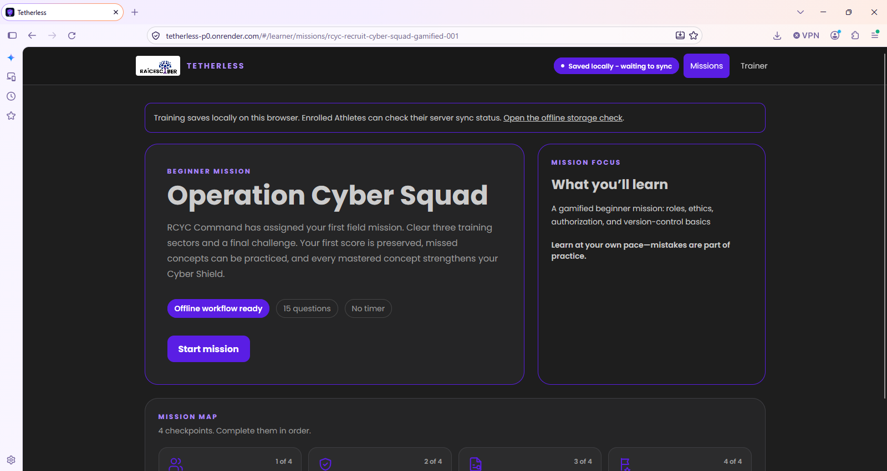
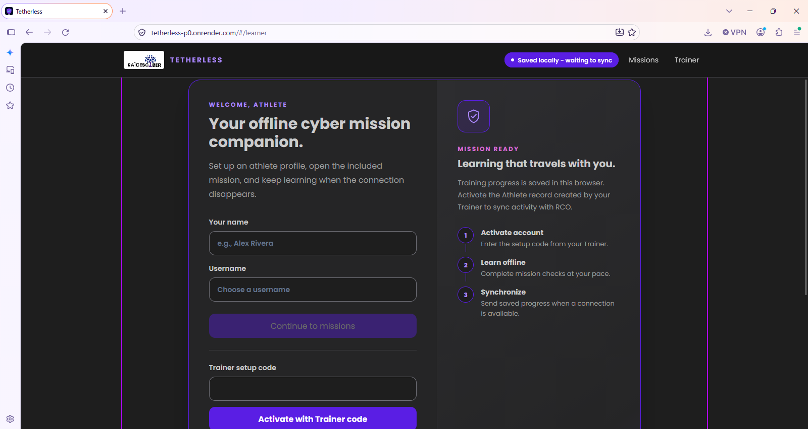
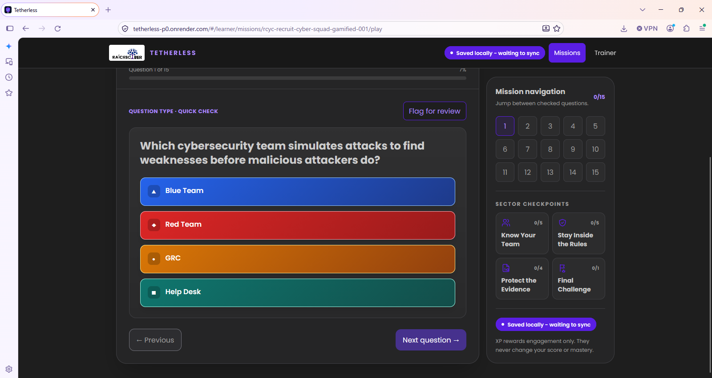
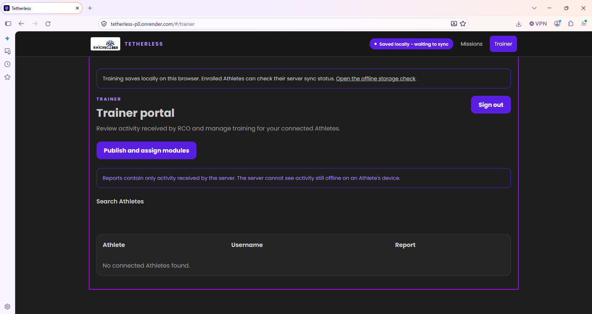

Tetherless / learner mission
Frontend engineering · Raíces Cyber Organization
Tetherless
An offline-first cybersecurity training app that lets learners continue a mission when service disappears, save progress locally, and synchronize results when they reconnect. I focused on the learner and trainer experience: clear setup, mission flow, progress cues, and understandable sync status.
PWAoffline-firstfrontend UXteam project
Open live demo ↗